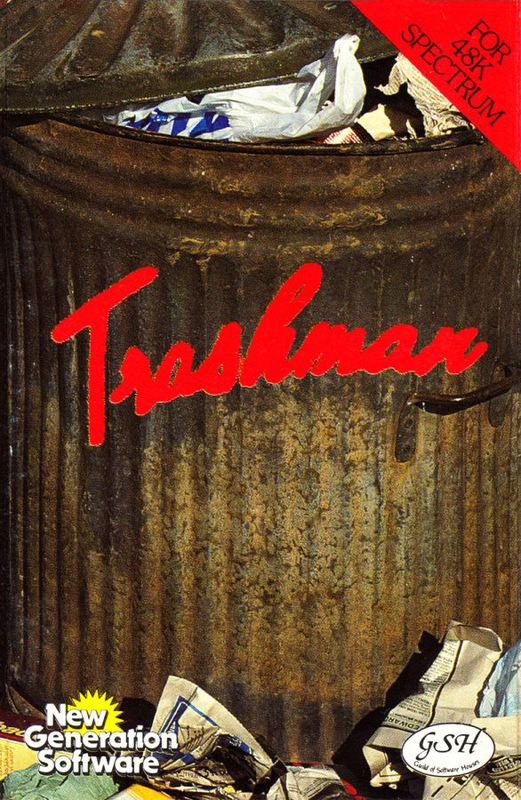
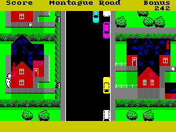
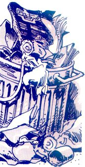

Trashman


{kind=link}

| Publisher: | New Generation |
| Price: | £5.95 |
| Year: | 1984 |
| Source: | CRASH, Issue 4 |
Looking for really original ideas in computer games is almost becoming an art in its own right. New Generation seem to have come up with another in Trashman. Even the cover design is different from anything seen before, with its dirty, over-crowded dustbin.

As a hero, this is likely to be the lowliest character you will ever play — a dustman. Players (there is a one- or two-player option) enter their names at the start and become the Trashman. The object of the game is to walk up and down a street, entering the houses’ gardens, collect a dustbin, take it out to the dustcart, empty it and replace the bin from exactly where it came. You must empty five bins in the first road, Montague Road, and do this against a falling Bonus score. When the bonus reaches zero a message comes up to tell you that complaints have been received about your slowness. After the third such ticking off you are fired!
The screen display is a bird’s eye view, looking down on a rather well-to-do suburban estate, with the road down the centre, complete with parked cars and the dustcart creeping up the left side. The road is busy with traffic in both directions. Problems encountered include getting killed by a car, walking on the grass in the gardens (your bonus score drops more rapidly), dogs which attack you on later screens and wayward kids riding their bikes on the pavement. If you meet a dog or bike you start to limp. The overhead perspective view is an isometric one, showing houses on either side, the gardens, hedges, even the shadows of the houses on this bright, sunny day. On later screens there are also cafes and pubs; entering them increases your points, but over-eating or drinking too much will cause trouble. Bonus points can be added to your falling total in another way. Sometimes, after you have returned an emptied bin, the householder will come to the door and offer a tip for services rendered. The content of these services is displayed at the base of the screen and replaced with a comment when you leave the house. ‘Just give me a ZX81 and I’ll control the world,’ is a favourite example.
Progressing to the next level (Pulteney Road) requires you to collect six bins. As the trashman’s progress takes some time (he’s slower when carrying a full bin) he often has to chase after the dustcart which moves up the road a short distance every few seconds. As the playing area is much larger than the display, and the 3D graphics are quite complicated, the screen doesn’t scroll up or down but cuts from scene to scene.
CRITICISM

‘The first thing to strike you about Trashman is the graphic quality, which is superb. The colours are all bright and solid but a lot of use has been made of NORMAL and BRIGHT to create the effect of shadows crossing paths and grass. The perspective view is also very realistic and reminiscent of New Generation’s Escape. It takes a moment’s practice to line Trashman up with a gate but once you get the hang of it’s no problem. You must be careful when replacing empty bins, since walking to the correct spot will result in the bin being deposited. If you happen to have overstepped the mark, when you turn to leave, you pick the damned thing up again. Emptying a bin into the dustcart is easy enough, just walk up behind it and the emptying occurs automatically. The graphics, then, are wonderful, the sense of humour is also very good, and the game is hugely playable. The only thing I want to know is, what really goes on inside the house when Trashman does a favour?’
‘The cars on the road are excellent, not only are they detailed but they move tremendously smoothly, at different speeds, in different directions, and at random intervals. The entire playing area is drawn very nicely. Amusing comments are put on the screen if you haven’t trodden on the grass and therefore been able to collect your tip. I like the small touches like the cyclists riding on the paths and the dogs which chew your legs, leaving you limping. Trashman is an immensely playable game that is very addictive at first, but I think that quality might wear off after a while. Nevertheless, it’s the best game that New Generation have produced yet.’
‘This is quite a different sort of perspective for Malcolm Evans, and it works really well. Great use of grey has been made in the colours, not very common in Spectrum games. All the detail, both in the graphics, the way they more and the game content itself, is very good. I found it playable and fun. Oddly, it isn’t a very fast game in the playing, but you soon realise that you must move with accuracy or you won’t complete before the bonus score reaches zero. Marvellous value for money, I would say. I don’t know how addictive it will be in the long term, but I shall carry on playing to find out.’
COMMENTS
| Control keys: | Cursors |
| Joystick: | Kempston, ZX 2, Protek, AGF |
| Keyboard play: | Responsive but more fun with joystick |
| Use of colour: | Very good |
| Graphics: | Great |
| Sound: | Fair |
| Skill levels: | Progressive difficulty by screen |
| Lives: | 3 unless hit by a car! |
| Features: | 1 or 2-player games |
| General rating: | Fun, unusual, high-quality game and very playable. |
| Use of computer: | 80% |
| Graphics: | 85% |
| Playability: | 87% |
| Getting started: | 86% |
| Addictive qualities: | 76% |
| Value for money: | 85% |
| Overall: | 83% |